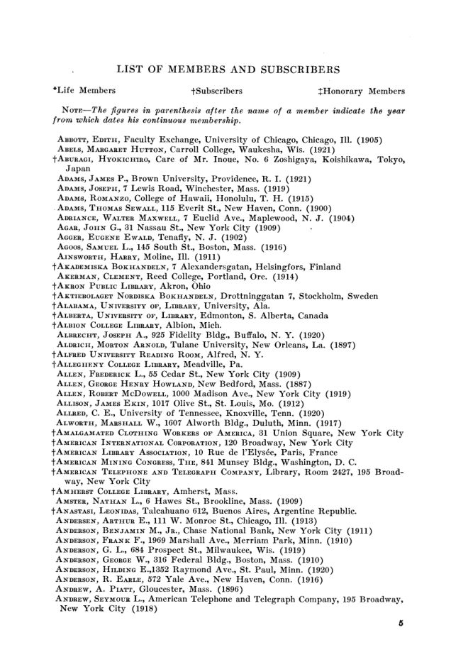

Manual de 1922: New Haven, seiscentos assinantes e Viena de volta
Leitura: 5 min
O manual de 1922 muda a sede editorial para St. Albans e New Haven, traz o estatuto revisto em 1919, quase seiscentos assinantes e um índice geográfico com Viena, Berlim e Munique.


O manual de 1922 já não sai de Princeton. A capa indica escritórios de publicação em St. Albans, Vermont, e New Haven, Connecticut, e as assinaturas passam a ser tratadas pela própria associação, em New Haven. A impressão fica a cargo da St. Albans Messenger Press, e o exemplar avulso, em brochura, custa US$ 1,50.
O Handbook of the American Economic Association de 1922 saiu como suplemento do nº 2 do vol. 12 da American Economic Review, com data de junho. Antes do sumário, uma página lembra que a associação foi organizada em Saratoga, em 9 de setembro de 1885, lista os ex-presidentes, de John B. Clark a Jacob H. Hollander, e os dirigentes do ano: Henry R. Seager, da Columbia University, na presidência, Ray B. Westerfield, de Yale, como secretário e tesoureiro, e Davis R. Dewey como editor-gerente da Review. O sumário mantém as quatro partes do manual de 1919, comentado no nº 160.
O que mudou desde 1919?
A apresentação repete o texto de 1919, com poucas atualizações. Os assinantes, que eram cerca de quatrocentos e cinquenta, passam a ser quase seiscentos, entre eles as bibliotecas mais importantes do país. A reunião anual de 1922 volta a ser anunciada para Chicago, nas festas de fim de ano, como a de 1919. E a Review, que tinha menos de dez anos, está agora no décimo segundo ano e, diz o texto, já ocupa lugar entre as revistas científicas sérias do país.
“A American Economic Association não é órgão de nenhum partido, seita ou instituição.” (“The American Economic Association is the organ of no party, sect, or institution.”)
O estatuto traz agora a indicação de revisão na reunião anual de dezembro de 1919, e não mais na de 1911. Os objetivos e as regras de filiação seguem iguais. A novidade está nos cargos: entre os eleitos aparecem três membros do Comitê de Programa, com mandato de três anos e renovação de um terço a cada ano, como no Conselho Editorial e no Comitê Executivo. O presidente prepara o programa das reuniões em consulta com esse comitê.
Como as listas mudaram de tamanho?
A lista de sócios e assinantes ocupa 57 páginas, das 5 às 61, ante 62 em 1919. O índice geográfico ocupa 39, das 62 às 100, ante 44. As listas encolhem em páginas no mesmo manual que anuncia mais assinantes; o texto não traz um total de sócios. O formato é o de sempre, com sinais para vitalícios, assinantes e honorários.
A relação alfabética abre, mais uma vez, com Edith Abbott, da University of Chicago, sócia desde 1905. Entre os últimos nomes está Erich W. Zimmermann, de Decatur, Illinois, sócio desde 1921. Há inscrições datadas de 1922, o próprio ano do manual, ao lado de filiações que remontam a 1888, como a de Frederick George Young, da University of Oregon.
Que países aparecem no índice geográfico?
A primeira parte vai do Alabama ao Wyoming, com o Distrito de Colúmbia e o Havaí, e segue pelo Canadá: em Kingston, a biblioteca da Queen’s University; em Montreal, Stephen Leacock, a McGill University e a École des Hautes Études Commerciales. Na parte de outros países, as seções legíveis vão da Austrália à Tasmânia, passando por China, Cuba, Índia, Itália, Japão, Lituânia, Noruega, Filipinas, Portugal, África do Sul, Espanha, Suécia e Suíça.
A Europa Central volta ao mapa. A Áustria, ausente em 1919, reaparece com uma entrada: F. von Wieser, em Viena. A Alemanha, que em 1919 tinha apenas G. Cohn, em Göttingen, passa a ter entradas em Berlim, Göttingen, Hamburgo e Munique, entre livrarias, a Biblioteca Estatal da Prússia e a biblioteca da escola de comércio de Munique. Em Kaunas, na Lituânia, aparecem um assinante e uma biblioteca.
Em Cambridge seguem J. N. Keynes, Alfred Marshall e A. C. Pigou; em Oxford, Edwin Cannan e F. Y. Edgeworth; em Paris, Charles Gide e Yves Guyot; em Roma, M. Pantaleoni; em Genebra, W. E. Rappard. Em Londres consta uma delegação comercial russa. O Japão mantém uma das seções mais extensas fora da América do Norte, com Tóquio reunindo o Banco do Japão, a Biblioteca Imperial, universidades e empresas; na China, há entradas de Amoy a Tianjin; na Índia, de Allahabad a Trivandrum.
Na minha leitura
Na minha leitura, o manual de 1922 é o de uma associação que assume a própria gestão. A sede editorial e as assinaturas passam para endereços ligados ao secretário, e o estatuto de 1919 formaliza um Comitê de Programa, sinal de que organizar a reunião anual já exigia estrutura própria. O índice geográfico registra outra coisa: três anos depois do manual de 1919, economistas e bibliotecas de Viena, Berlim e Munique voltam à lista. Para quem estuda a circulação de ideias econômicas, essa volta é uma medida concreta, e modesta, da recomposição dos vínculos acadêmicos depois da guerra.
Glossário
- Assinante (subscriber)
- instituição ou pessoa que recebe as publicações sem ser sócia, como as bibliotecas.
- Comitê de Programa
- grupo eleito que prepara, com o presidente, o programa das reuniões anuais.
- Índice geográfico
- relação dos sócios e assinantes organizada por lugar de residência, e não por ordem alfabética.
- Sócio vitalício (life member)
- quem paga uma contribuição única e fica isento das anuidades.
Documentos, periódicos e notas (4)
- Purposes of the American Economic Association — texto institucional (pp. 1–2). Repete a apresentação de 1919, agora com quase seiscentos assinantes, a reunião de 1922 marcada para Chicago e a Review no seu décimo segundo ano. JSTOR
- Constitution of the American Economic Association — texto revisto na reunião anual de dezembro de 1919 (pp. 3–4). Mantém a anuidade de cinco dólares e a contribuição vitalícia de cem e inclui entre os cargos eleitos três membros do Comitê de Programa. JSTOR
- List of Members and Subscribers (pp. 5–61). Relação alfabética de sócios e assinantes, a partir de Edith Abbott, com endereços, sinais para vitalícios, assinantes e honorários e o ano de início da filiação contínua. JSTOR
- Geographical Index of Members and Subscribers (pp. 62–100). Os mesmos nomes agrupados por estado e cidade nos Estados Unidos e no Canadá e, depois, por país, da Austrália à Tasmânia. JSTOR
Fontes
- Purposes of the American Economic Association (pp. 1–2). JSTOR · Internet Archive (PDF)
- Constitution of the American Economic Association (pp. 3–4). JSTOR · Internet Archive (PDF)
- List of Members and Subscribers (pp. 5–61). JSTOR · Internet Archive (PDF)
- Geographical Index of Members and Subscribers (pp. 62–100). JSTOR · Internet Archive (PDF)
- Sumário da edição no JSTOR: The American Economic Review, vol. 12, nº 2 (suplemento).
Documento em domínio público (EUA, publicado antes de 1931), via JSTOR Early Journal Content e Internet Archive. Resumo e comentário do autor deste site, sem afiliação com a American Economic Association. Encontrou um erro? Escreva: a correção é publicada no próprio texto, com data.
← Nº 176 · As guildas inglesas, a guerra alemã a crédito e as zonas francas Nº 178 · Adams, o crédito, a Rússia que compra e o circuito do dinheiro →